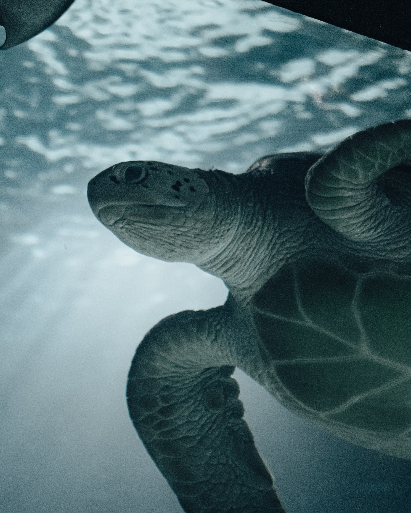
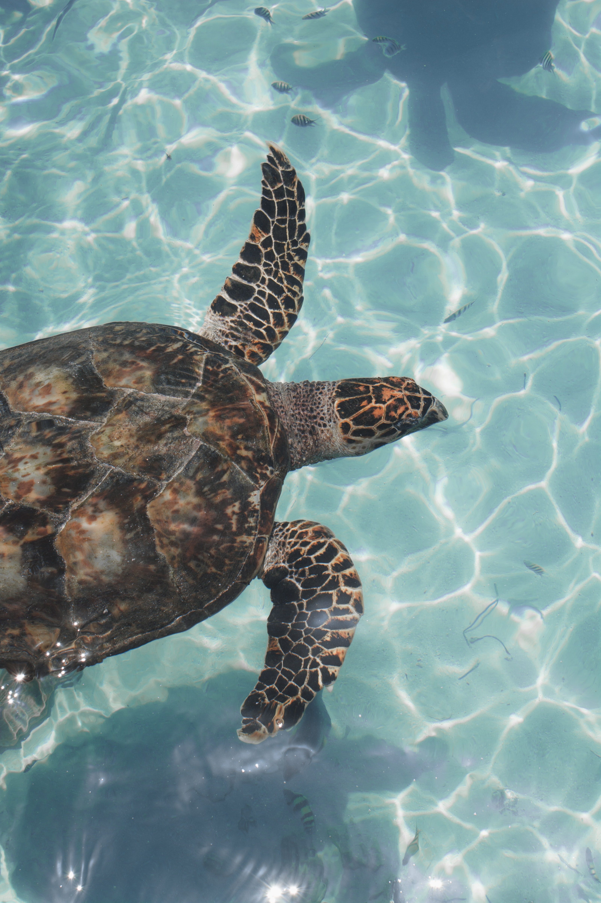

Gallery





It's all about Sea Turtles today Extremely Cute and Cuddly…. but unfortunately extremely endangered too.
Why ??
What is the primary root cause of their precarious situation? None other than us, humans. Recognizing our part in putting these wonderful animals in risk is disheartening. But rather than focusing on the bad, let's use our energy to learn more about them and take protective measures.
Sri Lanka, a stunning island nation well-known for its diverse fauna. Our tropical oceans are also blessed with a flourishing wildlife, in addition to majestic elephants majestic leopards, playful sloth bears, and majestic leopards. Warm waters around the island are a spectacle of life, from giant blue whale colonies in Kalpitiya to the shy and funny looking dugongs in Mannar. This surge in marine biodiversity provides a compelling argument to think about booking your next trip to
heartily Welcome to our website Whether you're an enthusiastic conservationist, a curious wildlife lover, or someone seeking to make a difference, we have you covered. Investigate our in-depth guides on the various kinds of sea turtles of Srilanka, their habitats, threats they face , and some of the famous and important turtle hatcheries in Sri Lanka. Let's work together to create awareness, advocate for sustainable lifestyles, and protect sea turtles for future generations.
Hawksbills, which are native to coral reefs and are only known to eat a few different kinds of marine sponges, live there. Due to the growth of uncommon sponge species made possible by this diet, the reef's biodiversity has increased. In the absence of Hawksbills, sponges have the potential to overgrow, choke, and kill slow-growing corals. The Hawksbill's function on the reef has become even more vital as reefs are put under increasing pressure from climate change and other negative factors.
Additionally, sea turtles benefit the water. By laying their eggs on the sand, sea turtles that are nesting benefit beaches. Eggshells and unhatched eggs that are left behind supply vital nutrients that feed beach grasses and other dune flora, which stabilizes dunes and helps prevent coastal erosion.
All stages of a sea turtle's life make them prey for various creatures. Birds, crabs, terrestrial animals, and fish all eat hatchlings. Sharks and orcas are apex predators that feed on adult sea turtles.
Remoras, algae, diatoms, barnacles, and other small crustaceans are just a few of the "aquatic hitchhikers" that find a home with sea turtles. Sea turtles help move these species because they make lengthy migrations. Fish use them as cover from predators and they also serve as a sort of umbrella for the fish. Sea turtles occasionally offer a resting area for seagulls to land on when they are at the water's surface for breathing or resting—almost like a reptilian aircraft carrier! Sea turtles are among the most endearing animals on the earth, in addition to playing a significant ecological purpose. Sea turtles are adored by all, it appears. But they are more than just charismatic people.
For numerous coastal communities all around the world, sea turtles have a significant cultural significance. They are revered or regarded as ancestors in many indigenous cultures. They are also a significant source of revenue for coastal people through Sri Lankan ecotourism, which is a significant and growing component of the country's tourism industry. According to research, selling sea turtle parts (eggs, meat, and shells) can bring in three times as much money as selling them whole, making them more valuable alive than dead. They are a source of wonder and inspiration. It is genuinely wonderful and a memorable experience to see them push themselves up a beach to nest, swim through a reef, or watch hatchlings sprint to the sea. Our blue earth would be lacking without sea turtles.
Unlike certain other reptiles including crocodiles, mothers of turtles do not tend to their young. Instead, after the eggs are laid, the female turtle ceases all interaction with the nest, leaving the eggs to hatch under the heat of the nearby, sun-warmed sand. The hatchling turtles, also known as young turtles, start to emerge from their shells and wander around the nest after around 60 days of incubation. The majority of the eggs will have hatched after a further 2 days. Sand from the nest's roof and sides falls to the floor and forms a platform as the hatchlings move around.As more sand is deposited, this platform rises, pushing the hatchlings to the surface in a "elevator-like" motion. At night, when it is cooler and they are less visible to predators, the hatchlings leave the nest.
For the baby turtles, this is a particularly hazardous time because there may be many predators around, including rodents, crabs, dogs, and, in the morning, birds. As a result, they quickly crawl in the direction of the brightest, lowest horizon, which in the open sky is the sea's reflection of the moon and stars. However, even hatchlings that make it to the water are still in danger. Large fish, seagulls, and many sharks live in the inshore seas. In the first 48 hours after reaching the sea, hatchlings swim nonstop. This is the period when they stop eating.Instead, they eat only the egg yolk residue that stays in their intestines. This behavior, referred to as the "juvenile frenzy," is crucial for enabling hatchlings to get away from the predator-rich inshore waters and be pushed away by the open ocean currents. When they get to these currents, they start consuming small, floatable marine life. Their first year, sometimes known as the "lost year," is not well understood. However, it is thought that when the female turtles are fully grown, they will go back to the beach where they themselves hatched to lay their eggs. According to estimates, just one out of every thousand eggs that hatch eventually mature into adult turtles.
Turtle watching is an amazing experience beyond explanation. Watching these calm and peaceful critters in the sea, slowly swimming, looking for their next meal, or hauling themselves up to a sandy beach for nesting - is something that is bound to be in your memory for a long time. Depending on the season,
Talk to an expert like a Mahoora Naturalist, they will definitely tell you where to go and how to do this in the most environmentally conscious manner possible